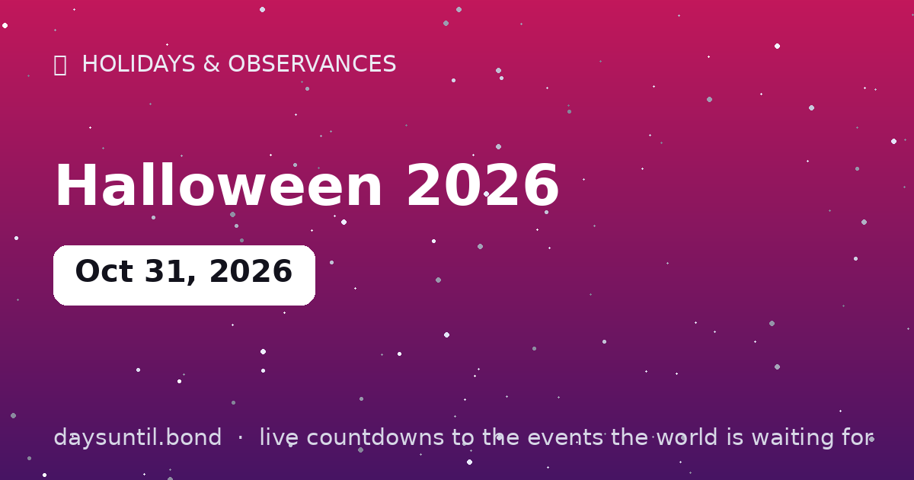

How Many Days Until Halloween 2026?
Halloween 2026 falls on Saturday, October 31, 2026.
As of October 24, 2026: 7 days to go — 1 weeks and 0 days, 5 weekdays (2 weekend days), about 168 hours.

Quick facts
| Date | Saturday, October 31, 2026 |
|---|---|
| Category | Holiday / observance |
About Halloween 2026
Halloween 2026 falls on Saturday, October 31, 2026. All Hallows' Eve: costumes, candy, haunted houses and the year's spookiest full-moon energy. The second-largest commercial holiday in the US after Christmas, with roots going back to the Celtic festival of Samhain.
The live counter above counts down the days, hours and minutes to Halloween 2026 in your local time zone, and switches to a 'days since' counter once it arrives.
Is Halloween 2026 on a weekend?
Yes — Halloween 2026 falls on a Saturday, which is the best possible version of the date. When October 31 lands on a weekday, trick-or-treating gets squeezed into a couple of hours between homework and bedtime, and the costume parties shift to the nearest Friday or Saturday night. On a Saturday, none of that applies: the evening itself is the party, families can start early without worrying about school the next morning, and the Sunday afterwards is a buffer rather than a commute.
It also changes the economics. Halloween is the second-largest commercial holiday in the United States after Christmas, and a Saturday date consistently pushes participation and spend higher than a Monday or Tuesday date, because the costume has a full night out rather than a 90-minute window.
Why Halloween is always October 31
Unlike Thanksgiving, Halloween never moves. It sits on the eve of All Hallows' Day (November 1), the Christian feast that gave the holiday its name — All Hallows' Eve contracted to Halloween. The date was fixed to the church calendar rather than to a Thursday or a lunar phase, which is why it is the same day every year while the holidays around it drift.
The customs underneath are much older. The festival most often cited as the origin is Samhain, the Celtic new year marker at the end of harvest, when the boundary between the living and the dead was thought to thin. Guising — dressing up and going door to door — grew out of that, and the jack-o'-lantern began as a carved turnip before Irish and Scottish immigrants switched to the native pumpkin in North America.
Is there a full moon on Halloween 2026?
No. The October 2026 full moon falls on October 26, five days before Halloween, so the night of October 31 has a waning gibbous moon — still bright, roughly three-quarters lit, and high in the sky through most of the evening. A genuine full moon on October 31 is rare: the next one is in 2039.
Practically, that is good news for anyone with small children: a bright moon above the horizon makes pavements, steps and driveways easier to navigate on the walk between houses.
What time does trick-or-treating start?
In most of the United States and Canada, trick-or-treating runs roughly 5:30pm to 8:30pm local time, with the busiest half-hour usually right after sunset. The convention is the porch light: a lit porch means sweets are being handed out, a dark one means knock on the next door instead. Many towns now publish official hours, and a growing number set them on the last Saturday of October rather than the 31st itself — worth checking locally, because 2026's Saturday date means a few municipalities will simply use the day.
Because the counter at the top of this page runs in your time zone and not a server's, the number you see is the number that applies where you are standing — which matters when the same evening is 6pm in Chicago and 11pm in London.
Why this page says 10 days and another site says 11
Countdown sites disagree by one day for two reasons, and neither site is broken. The first is the counting convention: some tools count today as day one, so their answer is always one higher than ours. This page counts whole days remaining — 1 means tomorrow, 0 means today — which is what most people mean when they ask how many days are left.
The second is the time zone. A countdown computed on a server in one country is a day out for readers in another, because the calendar date differs at the same instant. Every calculation here runs in your browser using your device's clock, so the number always agrees with the date on your phone.
Halloween day-of-week through 2030
| Year | Date | Day of week | Countdown note |
|---|---|---|---|
| 2026 | October 31 | Saturday | Best-case date — the party is on the night itself |
| 2027 | October 31 | Sunday | Trick-or-treat likely moved to Saturday Oct 30 in many towns |
| 2028 | October 31 | Tuesday | Weekday — expect official 6–8pm windows |
| 2029 | October 31 | Wednesday | Weekday — parties shift to the weekend before |
| 2030 | October 31 | Thursday | Weekday — the last Thursday Halloween until 2036 |
Halloween around the world
The American export is the loudest version, but not the original or the only one. Ireland and Scotland keep the closest continuity with Samhain — bonfires, guising and, in Ireland, a public holiday on the last Monday of October. In Mexico, Día de Muertos runs from October 31 to November 2 and is not a Halloween variant at all: it is a separate tradition of ofrendas, marigolds and family graves that happens to sit alongside it on the calendar.
In Japan, Halloween has become a costume event for adults rather than children, with the Kawasaki parade drawing tens of thousands and almost no door-to-door element. Across Catholic Europe, November 1 is All Saints' Day — a public holiday in countries including France, Spain, Italy and Poland — with November 2 following as All Souls' Day, which is when families visit cemeteries. The three dates are historically one observance spread over three days.
Practical safety for the night itself
Most of it is mundane and worth repeating. Give children a torch or a glow stick and add reflective tape to a dark costume: the peak trick-or-treat hours are after sunset, and a black cloak on an unlit pavement is genuinely hard to see. Cross at corners and between parked cars rather than from behind them, stay on pavements and front paths rather than cutting across gardens, and keep to houses with a lit porch.
On the sweets themselves: commercially wrapped items are the safe default, and anything home-made or unwrapped from a stranger should be politely left. If a child has an allergy, check labels before the night rather than after — and carry the usual epinephrine if it has been prescribed. Drivers should assume extra foot traffic on residential streets between 5pm and 9pm.
Your Halloween 2026 countdown milestones
It is easier to plan against fixed points than against a number that moves. These are the dates on which the countdown to Halloween 2026 passes each marker between now and the day itself — the last one falls on Friday 30 October, when there will be 1 day left.
| Milestone | Day | Date | Remaining |
|---|---|---|---|
| 7 days | Saturday | 24 October 2026 | 7 days to go |
| 3 days | Wednesday | 28 October 2026 | 3 days to go |
| 1 days | Friday | 30 October 2026 | 1 day to go |
How the remaining time breaks down
7 days is the headline, but it is rarely the number that helps. 5 of those are weekdays and 2 fall on a weekend, which is the split that matters if you are planning around work. It is 1 weeks and 0 days, or roughly 0.2 months, or about 168 hours.
| Unit | Until Halloween 2026 |
|---|---|
| Days | 7 |
| Weeks | 1 weeks and 0 days |
| Months (approx) | 0.2 |
| Weekdays | 5 |
| Weekend days | 2 |
| Hours | 168 |
| Sleeps | 7 |
Working days are Monday to Friday and do not subtract public holidays, which vary by country and employer — the full month-by-month split is on our weekday page for Halloween 2026.